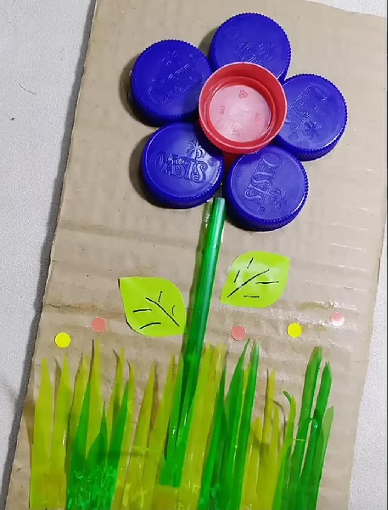

Hiasan dinding bunga tutup botol dan sedotan

Alat dan Bahan
- Tutup botol
- kardus bekas
- kertas origami hijau
- kertas warna
- lem
langkah pembuatan Hiasan dinding
- Menyiapkan alat dan bahan kardus bekas,tutup botol plastik 5 warna,sedotan plastik,kertas origami,kertas warna,lem
- Menyiapkan alas: Potong kardus bekas menjadi persegi panjang yang rapi
- Membuat Kelopak Bunga:
Tempelkan 1 tutup botol merah di tengah, lalu susun 5 tutup botol biru melingkari tutup botol merah menggunakan lem. - Membuat Batang & Daun: Tempelkan 1 sedotan hijau tegak lurus ke bawah dari bunga sebagai batang.
- Gunting kertas hijau membentuk 2 lembar daun, beri detail urat daun dengan pulpen/spidol, lalu tempelkan di sisi batang.
- Membuat Rumput:
Gunting sedotan-sedotan hijau secara memanjang/runcing menyerupai helai rumput, lalu tempelkan berjejer di bagian bawah kardus. - Finishing: Tambahkan stiker/potongan kertas bulat warna-warni di atas rumput sebagai hiasan tambahan.
Biaya Alat dan Bahan
- Kardus Bekas & Tutup Botol Bekas: Rp0
- Sedotan Plastik Hijau (1 bungkus kecil): Rp2.000 – Rp5.000
- Kertas Origami/Warna: Rp2.000 – Rp5.000
- Lem (Tembak / UHU): Rp3.000 – Rp5.000
Total Estimasi Biaya: Rp5.000 – Rp15.000 (hampir gratis jika semua bahan menggunakan barang daur ulang)
LabaRp.8.000-5.000
=Rp.3.000